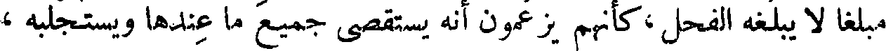
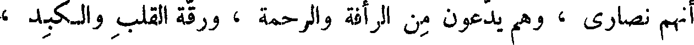
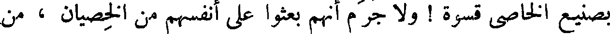

File: 000150.gt.txt (if the image is defective, simply delete all Arabic text and the line will be excluded)

والخطأ في الدين أضر من الخطأ في الرياضة والصناعة ، والفلسفة والكيمياء ،
File: 000151.gt.txt (if the image is defective, simply delete all Arabic text and the line will be excluded)

وفي بعض المعيشة التي يعيش بها بنو آدم .
File: 000152.gt.txt (if the image is defective, simply delete all Arabic text and the line will be excluded)

وإذا كان المترجم الذي قد ترجم لا يكمل لذلك ، أخطأ على قدر
File: 000153.gt.txt (if the image is defective, simply delete all Arabic text and the line will be excluded)

نقصانه من الكمال . وما علم المترجم بالدليل عن شبه الدليل ؟ وما علمه
File: 000154.gt.txt (if the image is defective, simply delete all Arabic text and the line will be excluded)

بالأخبار النجومية ؟ وما علمه بالحدود الخفية ؟ وما علمه بإصلاح سقطات
File: 000155.gt.txt (if the image is defective, simply delete all Arabic text and the line will be excluded)

الكلام ، وأسقاط الناسخين للكتب ؟ وما علمه ببعض الخطرفة لبعض
File: 000156.gt.txt (if the image is defective, simply delete all Arabic text and the line will be excluded)

المقدمات ؟ وقد علمنا أن المقدمات لا بد أن تكون اضطرارية ، ولا بد أن
File: 000157.gt.txt (if the image is defective, simply delete all Arabic text and the line will be excluded)

تكون مرتبة ، وكالخيط الممدود(1) . وابن البطريق وابن قرة(2)لا يفهمان
File: 000158.gt.txt (if the image is defective, simply delete all Arabic text and the line will be excluded)

هذا موصوفا منزلا، ومرتبا مفصلا ، من معلم رفيق ، ومن حاذق طب ؛
File: 000159.gt.txt (if the image is defective, simply delete all Arabic text and the line will be excluded)

40 فكيف بكتاب قد تداولته اللغات واختلاف الأقلام ، وأجناس
File: 000160.gt.txt (if the image is defective, simply delete all Arabic text and the line will be excluded)

خطوط الملل والأمم ؟ !
File: 000161.gt.txt (if the image is defective, simply delete all Arabic text and the line will be excluded)

ولو كان الحاذق بلسان اليونانيين يرمي إلى الحاذق بلسان العربية ،
File: 000162.gt.txt (if the image is defective, simply delete all Arabic text and the line will be excluded)

ثم كان العربي مقصرا عن مقدار بلاغة اليوناني ، لم يجد المعنى والناقل
File: 000163.gt.txt (if the image is defective, simply delete all Arabic text and the line will be excluded)

التقصير ، ولم يجد اليوناني الذي لم يرض بمقدار بلاغته في لسان العربية
File: 000164.gt.txt (if the image is defective, simply delete all Arabic text and the line will be excluded)

بدا من الاغتفار والتجاوز ، ثم يصير إلى ما يعرض من الآفات لأصناف
File: 000165.gt.txt (if the image is defective, simply delete all Arabic text and the line will be excluded)

الناسخين ؛ وذلك أن نسخته لا يعدمها الخطأ ، ثم ينسخ له من تلك النسخة
File: 000166.gt.txt (if the image is defective, simply delete all Arabic text and the line will be excluded)

ولم يكن ذلك في أبويه ؛ وخرج مثقلا سيء الهداية . وللو رشان هداية ،
File: 000167.gt.txt (if the image is defective, simply delete all Arabic text and the line will be excluded)

وإن كان دون الحمام ؛ وجاء أعظم جثة من أبويه ؛ ومقدار النفس من
File: 000168.gt.txt (if the image is defective, simply delete all Arabic text and the line will be excluded)

ابتداء هديله إلى منقطعه ؛ أضعاف مقدار هديل أبويه .
File: 000169.gt.txt (if the image is defective, simply delete all Arabic text and the line will be excluded)

وفوالج البخت إذا ضربت في إناث البخت ؛ ولم يخرج الحوار
File: 000170.gt.txt (if the image is defective, simply delete all Arabic text and the line will be excluded)

إلا أدن(1) قصير العنق ؛ لا ينال كلأ ولا ماء إلا بأن يرفعا إليه ؛ فيصير
File: 000171.gt.txt (if the image is defective, simply delete all Arabic text and the line will be excluded)

- لمكان نقصان خلقه - جزور لحم ؛ ولا يكون من اليعملات ولا من
File: 000172.gt.txt (if the image is defective, simply delete all Arabic text and the line will be excluded)

السابقة ؛ ولو عالوه وكفوه مؤنة تكلف(2) المأكول والمشروب ، ثم بلغ
File: 000173.gt.txt (if the image is defective, simply delete all Arabic text and the line will be excluded)

إلى أن يصير جملا يمكنه الضراب . وكذلك [ الأنثى التي هي ] الحائل إلى
File: 000174.gt.txt (if the image is defective, simply delete all Arabic text and the line will be excluded)

أن تصير ناقة ؛ فلو ألقحها الفحل لجاء ولدها أقصر عنقا من الفيل ، الذي
File: 000175.gt.txt (if the image is defective, simply delete all Arabic text and the line will be excluded)

لو لم يجعل الله تعالى له خرطوما يتناول به طعامه وشرابه ، لمات جوعا
File: 000176.gt.txt (if the image is defective, simply delete all Arabic text and the line will be excluded)

وهزالا ؛ وليس كذلك العراب . وإذا ضربت الفوالج في العراب جاءت
File: 000177.gt.txt (if the image is defective, simply delete all Arabic text and the line will be excluded)

هذه الجوامز(3) والبخت الكريمة التي تجمع عامة خصال العراب وخصال
File: 000178.gt.txt (if the image is defective, simply delete all Arabic text and the line will be excluded)

البخت ؛ فيكون ما يخرج التركيب من هذين الجنسين أكرم وأفخم
File: 000179.gt.txt (if the image is defective, simply delete all Arabic text and the line will be excluded)

وأنفس وأثمن . ومتى ضربت فحول العراب في إناث البخت جاءت هذه
File: 000180.gt.txt (if the image is defective, simply delete all Arabic text and the line will be excluded)

الإبل البهونية(4) [ والصرصرانية(٥) ] فتخرج أقبح منظرا من أبويها ،
File: 000181.gt.txt (if the image is defective, simply delete all Arabic text and the line will be excluded)

وأشد أسرا من أبويها . [ وقال الراجز : ولا بهوني من الأباعر ]
File: 000182.gt.txt (if the image is defective, simply delete all Arabic text and the line will be excluded)

وخلاصته ، لا يحتاج فيه إلى مجزز المدلجي(1) ، ولا إلى آبن كريز
File: 000183.gt.txt (if the image is defective, simply delete all Arabic text and the line will be excluded)

( خصاء الروم )
File: 000184.gt.txt (if the image is defective, simply delete all Arabic text and the line will be excluded)

الخزاعي .
File: 000185.gt.txt (if the image is defective, simply delete all Arabic text and the line will be excluded)

ومن أهل الملل من يخصي ابنه ويقفه على بيت العبادة، ويجعله سادنا ،
File: 000186.gt.txt (if the image is defective, simply delete all Arabic text and the line will be excluded)

كصنيع الروم ، إلا أنهم لا يحدثون في القضيب حدثا ، ولا يتعرضون
File: 000187.gt.txt (if the image is defective, simply delete all Arabic text and the line will be excluded)

إلا للأنثيين ، كأنهم إنما كرهوا لأولادهم إحبال نسائهم ورواهبهم
File: 000188.gt.txt (if the image is defective, simply delete all Arabic text and the line will be excluded)

فقط ! ! فأما قضاء الوطر وبلوغ اللذة ، فقد زعموا أنهم يبلغون من ذلك
File: 000189.gt.txt (if the image is defective, simply delete all Arabic text and the line will be excluded)

مبلغا لا يبلغه الفحل ، كأنهم يزعمون أنه يستقصي جميع ما عندها ويستجلبه ،
File: 000190.gt.txt (if the image is defective, simply delete all Arabic text and the line will be excluded)

لفرط قوته على المطاولة .
File: 000191.gt.txt (if the image is defective, simply delete all Arabic text and the line will be excluded)

وكل خصاء في الدنيا فإنما أصله من قبل الروم ، ومن العجب
File: 000192.gt.txt (if the image is defective, simply delete all Arabic text and the line will be excluded)

أنهم نصارى ، وهم يدعون من الرأفة والرحمة ، ورقة القلب والكبد ،
File: 000193.gt.txt (if the image is defective, simply delete all Arabic text and the line will be excluded)

ما لايدعيه أحد من جميع الأصناف ، وحسبك بالخصاء مثلة ! وحسبك
File: 000194.gt.txt (if the image is defective, simply delete all Arabic text and the line will be excluded)

بصنيع الخاصي قسوة ! ولا جرم أنهم بعثوا على أنفسهم من الخصيان ، من
File: 000195.gt.txt (if the image is defective, simply delete all Arabic text and the line will be excluded)

طلب الطوائل وتذكر الأحقاد ، مالم يظنوه عندهم ، ولا خافوه من قبلهم ،
File: 000196.gt.txt (if the image is defective, simply delete all Arabic text and the line will be excluded)

وهبت ريح العلماء ، وكسد العي والجهل ، وقامت سوق البيان والعلم ؟ !
File: 000197.gt.txt (if the image is defective, simply delete all Arabic text and the line will be excluded)

وليس يجد الإنسان في كل حين إنسانا يدربه ، ومقوما يثقفه .
File: 000198.gt.txt (if the image is defective, simply delete all Arabic text and the line will be excluded)

والصبر على إفهام الريض شديد ، وصرف النفس عن مغالبة العالم أشد
File: 000199.gt.txt (if the image is defective, simply delete all Arabic text and the line will be excluded)

منه ، والمتعلم يجد في كل مكان الكتاب عتيدا ، وبما يحتاج إليه قائما